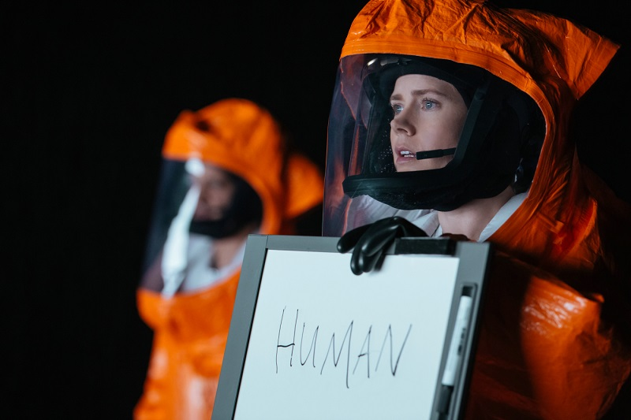

More than words
Know the language is not the same as know how to communicate. Communication is a piece of you.
By Gabriel Nakamura in foreing language
December 29, 2021
Departure
Three weeks ago from the moment that I’m writing this chronicle I made one of the toughest decisions of my life, which was moving to another country. I landed in the United States to start a new job. This represented to me an opportunity that I haven’t had during my Ph.D. in Brazil due to the cut of budgets promoted by the Federal government. After almost 10 presentation letters, I was called for an interview at Texas A&M University-Corpus Christi. Two or three weeks after the interview my supervisor mailed me asking if I would like to accept the position. I didn’t think twice, and in three months I waived all my duties in Brazil, said goodbye to my friends, family, and cat, and board to the US.
I was (and still am) very excited to start this new job, but at the same time anxious, nervous, and deeply sad to leave all my beloved ones and start a new life, with a new job, with new people, in a different country, which implies a different language. Despite English figure as the dominant language of science, my vocabulary is limited to the academic universe, but our lives go much beyond the walls of laboratories and offices of Universities. Therefore, even used to a foreign language, and even with a proficiency test certifying that I have enough skills to live in an English-speaking country, dealing with the daily activities requires a huge amount of energy, with lots of lost words during conversations. After twenty-two days this figured out in the top spot of the most difficult things to deal with as an immigrant.
The Arrival
“The grammar of each language is not merely a reproducing instrument for voicing ideas but rather is itself the shaper of ideas.”
I remember watching a Hollywood movie a few years ago, Arrival is the movie`s name. In a nutshell, the movie shows how a linguist researcher unveils what aliens (not from a foreign country, but another planet) are planning to do after a sudden arrival on Earth. To discover the alien’s aims the researcher had to learn how to communicate with those aliens. After learning the alien’s language the researcher faces a complete change in the way that she sees the world around her. The bottom line is that language is much more than a way to express ideas, it also influences the way that we perceive the world.
After some years I decided to check if the rationale behind the movie makes sense, or if it was just a good SciFi movie based on unreliable scientific ideas. After reading a couple of articles, I realized that the last is the truth behind Arrival. Accordingly to an article in Smithsonian Magazine, written by Ben Panko, the idea that inspired the movie, is that there is a link between language and the way people thought. This idea has its roots from the 20th century and is known as “Sapir-Whorf” hypothesis. Accordingly to this hypothesis, the language is not just influenced by the environment and culture of the speakers but also influences people’s culture and thoughts. Ben Panko highlight that, despite being seductive for its simplicity and exoctiness, the Sapir-Whorf hypothesis finds much more support in writers and would-be intellectuals than in the ideas of respected anthropologists and linguistic researchers like Noam Chomsky and Steven Pinker.
From a non-scientific and personal view I liked the movie, it catches my attention, as similar as the classic “Alien” movie also did. Currently, I know that both share similarities when the matter is its scientific plausibility. The movie was a recommendation of my ex-girlfriend, that received the recommendation from another friend of hers, a Portuguese Professor. At that time, she said to me that the movie presents a strong basis on linguistic theory, according to her friend. After I arrived in the US I watched the movie for the second time, and it still cached my attention, especially at this moment in which the need to express myself in a language that is not my native language is on top of my concerns. Currently, I’m realized that I share similarities with the Aliens of Arrival movie, not physical similarities, for my luck, but as a foreign struggling to express my ideas and feelings the way that I want.

The new driver
Even beware of the idea that language also affects how we see the world around us has a little to no scientific basis, from an individual point of view I must agree that language is not just about words chained in a sequence that makes sense. My early impression of living in a country with a different language makes me think that communication goes beyond expressing ideas. I can express what I need, I can ask and answer questions, I can go to a supermarket and buy food, water, beer, etc, I can require my social security card number, I can open a bank account, I can take a bus and arrive safely in my desired destination, I can even have fun playing cards with my American roomies, however, I can’t. I can’t because I can’t be the same person who I am. To speak is one thing, be yourself, with your 31-year-old constructed persona is a much different thing than only chaining words that make sense to express a given idea. So, the result is that I feel the “Sapir-Wohlf” phenomenon working on me since the way that I communicate indicates a different persona than my real one. The consequence is that I’m not who I am used to being, I can’t recognize myself, which makes me think that my personality is tied to the form that I put the ideas in the world. As a consequence, I feel frustrated, because I can’t be who I used to be in my home country. My level of proficiency is enough to survive, but I start to realize that is not enough to live a whole life.
I miss myself, my personality, a thing that is difficult to express in this text, I miss the way that I was used to interacting with people. To reinforce the feeling, it is like when you just get your driver’s license, you know how to drive, you know the tools that you need to use and how to use it, you are legally allowed and certified, but is not natural. You need to think about each movement that you are doing, create a script in your mind, double-check it, and after a lot of rounds of revisions already find a lot of flaws. Even though, you’re gonna reach your final destination through a way that spends much more fuel than you wanted to. In a similar way, I can make that my message reach its final destination, but not before it took a very steep way.
I wonder the day in which communication will be tied again to my personality, the way I am used to presenting myself to the world, with no GPS in my hands to check the way at every five minutes. I wonder if this day exists, time will tell. Until there we need patience and some pieces of unreliable Alien movies.